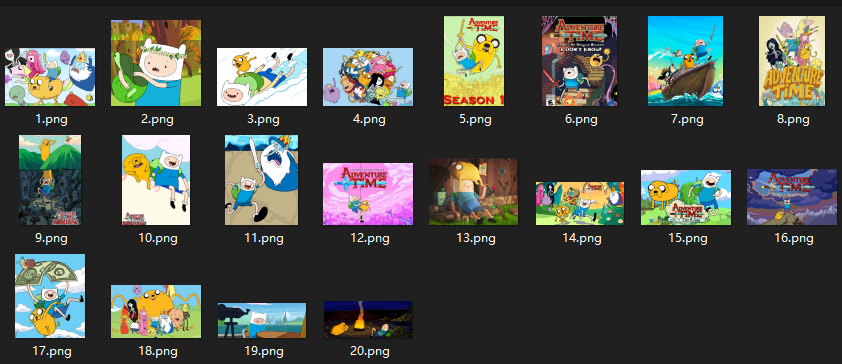

yolov5使用自定义数据训练模型
- categories
- >
- NeuralNetwork
- >
- yolov5
写在前面
参考：https://github.com/ultralytics/yolov5/wiki/Train-Custom-Data
训练环境：
- Ubuntu 20.04
- NVIDIA GeForce GTX850M
准备yolov5环境
下载yolov5
git clone https://github.com/ultralytics/yolov5国内下载缓慢，可以使用gitee上fork的仓库，例如：
git clone https://gitee.com/monkeycc/yolov5.git下载依赖
pip3 install -r requirements.txt准备数据集
准备原始数据
这里使用的是《探险活宝》，目标是检测Finn和Jake。

数据标记
选择标记工具
yolov5推荐工具：
这里使用makesense.ai：
makesense.ai使用
- 打开对应网站：https://www.makesense.ai
- 选择数据
- 选择Object Detection
- Create labels
创建对应标签，目标是Finn和Jake
标签顺序最好对应.yaml配置文件中的names。
- 数据标注
- 导出
选择YOLO格式并下载.zip压缩文件。
解压得到结果：
可以看到对应原始数据。
最终准备
在Ubuntu 20.04上进行训练，其它操作系统自行修改位置即可，数据集位置如下（示例）：
/home/ash/dataset/yolo/
|__ config.yaml
|__ images
| |__ 1.png
| |__ 2.png
|__ labels
|__ 1.txt
|__ 2.txtconfig.yaml文件：
train: /home/ash/dataset/yolo/images
val: /home/ash/dataset/yolo/images
nc: 2
names: ['finn', 'jake']trian：训练集数据文件夹val：测试集数据文件夹nc：标签数量names：标签名称（顺序根据前期标签顺序）
val和train目录不一定相同，由于是测试（选择偷懒）。
模型的训练
进入到yolov5目录（准备yolov5环境中内容），这里的位置是/home/ash/project/yolov5
python3 train.py --batch 2 --data /hom/ash/dataset/yolo/config.yaml --weights weights/yolov5s.pt--data：定位到你的数据集的.yaml文件。--batch：GPU显存大可以更大，官方示例是16。（汗.jpg）--weights：yolov5权重文件，不提供（提前下载好）会帮你下载，网速有可能非常感人。
更多配置可以参考detect.py文件（没错，train.py参数参考文件是detect.py中的parser部分）
detect.py中parser部分
if __name__ == '__main__':
parser = argparse.ArgumentParser()
parser.add_argument('--weights', nargs='+', type=str, default='yolov5s.pt', help='model.pt path(s)')
parser.add_argument('--source', type=str, default='data/images', help='source') # file/folder, 0 for webcam
parser.add_argument('--img-size', type=int, default=640, help='inference size (pixels)')
parser.add_argument('--conf-thres', type=float, default=0.25, help='object confidence threshold')
parser.add_argument('--iou-thres', type=float, default=0.45, help='IOU threshold for NMS')
parser.add_argument('--max-det', type=int, default=1000, help='maximum number of detections per image')
parser.add_argument('--device', default='', help='cuda device, i.e. 0 or 0,1,2,3 or cpu')
parser.add_argument('--view-img', action='store_true', help='display results')
parser.add_argument('--save-txt', action='store_true', help='save results to*.txt')
parser.add_argument('--save-conf', action='store_true', help='save confidences in --save-txt labels')
parser.add_argument('--save-crop', action='store_true', help='save cropped prediction boxes')
parser.add_argument('--nosave', action='store_true', help='do not save images/videos')
parser.add_argument('--classes', nargs='+', type=int, help='filter by class:--class 0, or --class 0 2 3')
parser.add_argument('--agnostic-nms', action='store_true', help='class-agnostic NMS')
parser.add_argument('--augment', action='store_true', help='augmented inference')
parser.add_argument('--update', action='store_true', help='update all models')
parser.add_argument('--project', default='runs/detect', help='save results to project/name')
parser.add_argument('--name', default='exp', help='save results to project/name')
parser.add_argument('--exist-ok', action='store_true', help='existing project/name ok, do not increment')
parser.add_argument('--line-thickness', default=3, type=int, help='boundingbox thickness (pixels)')
parser.add_argument('--hide-labels', default=False, action='store_true', help='hide labels')
parser.add_argument('--hide-conf', default=False, action='store_true', help='hide confidences')训练结果在runs/train/目录下，由于没有指定目标文件夹名称，一般都是最新的expn那个文件夹，权重文件在expn/weights目录下。
结果
python3 detect.py --weights runs/train/exp4/weights/best.pt --source /home/ash/test.png
comment:
- Valine
- LiveRe
- ChangYan